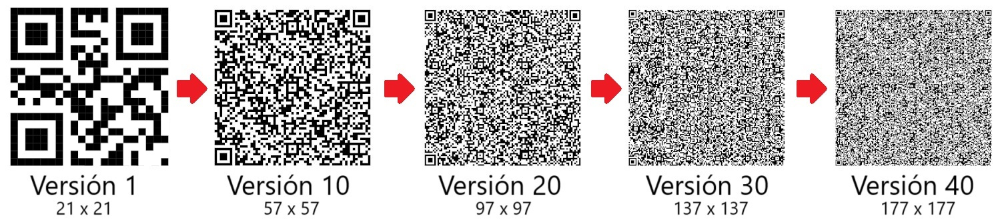

Datos del código QR:
Nivel de corrección de errores:
Empecemos con un código QR vacío:
Pero un momento. ¿Por qué de este tamaño?
A la hora de crear un código QR se deben tener en cuenta dos cosas:
Existen varias versiones de códigos QR, que van desde la 1 (21x21) hasta la 40 (177x177). Cada una de ellas incrementa en 4 módulos el tamaño.
El nivel de corrección de errores se mide en cuatro niveles:
A mayor cantidad de datos y mayor nivel de corrección de errores, más grande debe ser el código QR. En el caso que estamos estudiando se han introducido 19 caracteres (bytes) y usado el nivel de corrección de errores M. En la siguiente tabla debemos buscar la menor versión que nos permite almacenar esa cantidad de datos para el nivel de errores escogido.
| Versión | Tamaño | Cantidad de datos (en bytes) | |||
|---|---|---|---|---|---|
Una vez ya sabemos que versión tenemos que usar del código QR y por tanto su tamaño, podemos empezar a rellenar los módulos. Todos los códigos QR tienen ciertas secciones con diferentes propósitos. Estas son las que aparecen en nuestro caso de estudio:
El resto de módulos sin colorear están reservados para los datos y corrección de errores.
Los códigos QR deben tener a su alrededor una zona lisa (de color homogéneo sin nada impreso) de al menos 4 veces el tamaño de un módulo, que permita a los lectores leer el código con mayor facilidad y distinguirlo de otros elementos cercanos. El color de esta zona también determina la reflectancia del código (oscuro sobre claro o claro sobre oscuro).
Son patrones de 7x7 módulos separados del código por tiras de módulos blancos a su alrededor. Se colocan siempre en las esquinas superior izquierda, superior derecha e inferior izquierda.
La posición de estos tres patrones en las esquinas del código QR forma un triángulo isósceles, lo que permite al escáner reconocer el código QR incluso si está inclinado, girado, o si se lee desde cualquier dirección o en un espejo.
Son patrones de 5x5 módulos. El número y posición de estos patrones depende de la versión. A medida que el tamaño del código QR aumenta, se añaden más en ubicaciones específicas para proporcionar estabilidad adicional. Para la versión de nuestro código QR se necesita 1 patrón en la fila y columna 23.
La función de estos módulos es proporcionar una referencia adicional a los escáneres para corregir pequeñas deformaciones o distorsiones por si el código está impreso en una superficie curva, se ha doblado, o si el lector no está perfectamente alineado. Aseguran que la cuadrícula del código se mantenga recta.
Son patrones de módulos alternados (oscuro y claro) que se sitúan en la fila y columna 7 entre el patrón de posición de la esquina superior izquierda y los patrones de posición de la esquina superior derecha y esquina inferior izquierda.
Su función es ayudar al lector a determinar el tamaño o escala de los módulos y la dimensión del código QR. Ayuda a mantener la cuadrícula alineada correctamente tratando de mantener la uniformidad en la separación de los módulos, facilitando una lectura precisa.
Estos módulos sólo aparecen a partir de la versión 7. Consiste en un patrón de 18 módulos que proporciona datos acerca de la versión específica del código QR que se está utilizando. En estas versiones tan grandes, sin la información de versión, un escáner podría tener dificultades para identificar el tamaño específico del código QR y para determinar cómo debe organizar los datos que extrae de él.
Independientemente de la versión del código que hemos generado nosotros, veamos como se calcula. Primero se codifica el número de la versión a binario (con seis bits, 2 = 000010). La información binaria de la versión se convierte en un patrón de 18 bits que contiene 6 bits de datos (la versión) y 12 bits de código de corrección de errores BCH (Bose-Chaudhuri-Hocquenghem). Para calcular estos 12 bits adicionales que se concatenarán a los bits de la versión seguimos este proceso:
Tenemos que los 18 bits nos quedan . Estos se colocan por duplicado en los módulos reservados para ello:
Consiste en un patrón de 15 módulos situado también junto a los patrones de posición. Sirve para identificar el nivel de corrección de errores elegido y el patrón de máscara usados en el código.
El nivel de corrección de errores ya lo hemos mencionado, y el patrón de máscara lo estudiaremos en profundidad más adelante. Por ahora nos basta con saber que existen un total de ocho, y que se codifican como se indica en la tabla de abajo.
Los 15 módulos se dividen en 5 módulos de datos y 10 módulos de corrección de errores. De los 5 módulos de datos, 2 de ellos se reservan para el nivel de corrección de errores, y los otros 3 son para identificar una de las ocho posibles máscaras que se pueden aplicar. Para calcular el color de los 15 módulos, es similar a como hicimos con la información de la versión. Primero codificamos el nivel de corrección de errores elegido y le concatenamos el código asociado a la máscara aplicada, según estas tablas:
| L | M | Q | H | 01 | 00 | 11 | 10 |
|---|
| Máscara 1 | Máscara 2 | Máscara 3 | Máscara 4 | Máscara 5 | Máscara 6 | Máscara 7 | Máscara 8 | 000 | 001 | 010 | 011 | 100 | 101 | 110 | 111 |
|---|
En nuestro caso los bits de datos quedarían . Ahora tenemos que calcular los 10 bits de corrección de errores:
Tenemos que los 15 bits nos quedan .
Sin embargo, para asegurarse de que nunca serán todo ceros, se aplica un XOR con la máscara 101010000010010, de forma que el resultado final a colocar en el código QR es . Estos se colocan por duplicado en los módulos reservados para ello. Otro detalle a tener en cuenta, es que el módulo al final de la tira de módulos de abajo a la izquierda, es siempre de color oscuro. Porque así lo decidió el creador.
Una vez visto como se rellenan los módulos comunes a todos los códigos QR, vamos a ver como se rellenan los módulos que incluyen nuestros propios datos. Estos módulos los podemos dividir en tres tipos: módulos para datos, módulos para corrección de errores y módulos restantes. Cada versión de código QR tiene reservados una cantidad definida de módulos para estos tipos.
Los módulos restantes son siempre blancos, y son módulos que sobran, es decir, que no se pueden usar para meter más datos ni corregir errores.
Para introducir nuestro mensaje, dirección URL, o lo que esa, en el código QR, primero lo tenemos que codificar, transformar a ceros y unos. La codificación dependerá del modo en el que se usa el código QR. Existen varios (aunque cuatro principales):
El mensaje se analiza y se divide en segmentos que se codifican por separado en el modo más óptimo. En este caso, para simplificar la creación del código QR no optimizaré, y usaré sólamente un segmento para todo el mensaje en modo binario. El mensaje introducido, queda codificado tal que así:
Los diferentes segmentos codificados se concatenan en orden siguiendo una estructura, se añade al final del último unos bits de terminación y se rellena con bits adicionales hasta completar la capacidad máxima del código QR. El siguiente paso es dividir en bloques todo el churro de bits. Debemos dividirlo en diferentes bloques de distintos tamaños, que dependen de la versión y capacidad de corrección de errores elegida:
Cada bloque de datos, tiene asociado unos módulos de corrección de errores. Sin ellos, bastaría que se manchase el código, se deteriorara o se rompiera un cachito para perder lo que hay escrito en él.
Iré rápido en esta sección porque no es fácil de explicar y requiere muchos cálculos, matemáticas, teoría de códigos, división de polinomios, cuerpos de Galois, códigos Reed Solomon, etc. Es la parte que más me ha costado de implementar. Consiste básicamente en añadir redundancia a nuestro mensaje.
Dependiendo de la versión y de la capacidad de corrección de errores elegida, se requiere una cantidad diferente de módulos para la corrección de errores. Hay definidos hasta treinta y seis polinomios dependiendo de esta cantidad. Para obtener x cantidad de módulos de corrección se usa un polinomio, para otra cantidad se usa otro polinomio, y así, hasta treinta y seis posibilidades. Este polinomio se utiliza como divisor.
Por cada bloque de datos que hemos generado anteriormente, se calcula un bloque de corrección de errores. El proceso simplificado sería:
Como es algo complejo de mostrar, porque ya digo que requiere estudiar primero, me salto mostrar un ejemplo.
Una vez tenemos todo codificado y tenemos también los bits de corrección de errores para cada bloque, es hora de empezar a meterlos en el código QR.
Los datos se comienzan a introducir por la esquina inferior derecha en zigzag en columnas de dos módulos de ancho. Se sube hacia arriba y cuando se llega al final, se sigue por la siguiente columna hacia abajo, y luego hacia arriba, y así repetidamente. Si entre medias hay algún módulo de alineamiento u otro de este tipo, simplemente se salta y se establece en el siguiente módulo libre.
Primero se comienza introduciendo los datos. Una palabra (8 bits) de cada bloque alternativamente. Segundo los módulos de corrección de errores. Igualmente, una palabra alternativamente de cada bloque. Y por último, módulos de color blanco para el sobrante.
El código QR no está aún terminado. ¿Recuerdas que en el patrón de información del formato hablamos de las máscaras?
Es posible que entre los datos y la corrección de errores los módulos formen por sí solos patrones indeseados, o zonas blancas y negras demasiado grandes. Esto podría confundir a los lectores para leer el código QR correctamente.
Para evitar esos patrones indeseables, se usan las máscaras. Lo que hacen es cambiar el color de ciertos módulos para romper esas zonas o patrones. Si el módulo del código QR coincide con un módulo oscuro de la máscara, simplemente se cambia su color. Las máscaras sólo actúan sobre los módulos de datos, corrección de errores y los restantes.
Existen hasta un total de ocho máscaras.
Cada máscara se aplica por separado al código QR y se evalúa el resultado. Concretamente se evalúa lo siguiente:
Cada uno de estos factores, cada vez que se cumple, aumenta la penalización de la máscara mediante unas reglas. Tras aplicar las ocho máscaras por separado, la que obtenga menor penalización es la que gana y la que finalmente se codifica en el patrón de formato que vimos antes.
Realmente aplique la máscara que se aplique al código QR, si el escáner es capaz de leerlo, funciona. Es sólo que se elije esa que es más probable que no haya dificultades para leer.
El código QR con la máscara aplicada y codificada en el patrón de formato, es nuestro código QR final.
Habrás podido notar que hay muchos factores que influyen en el aspecto de un código QR, como la codificación de los datos, o la máscara aplicada. Es por ello que si intentas generar un código QR con otra aplicación, probablemente te muestre algo diferente. Pero ahora ya sabes el porqué.
Los códigos QR están diseñados para las máquinas, son realmente complejos para los humanos, pero muy útiles. Aunque algún ingeniero tuvo que inventarlo y definirlo. Aquí sólo hemos visto un caso muy sencillo de como crearlo. Esto es realmente más complejo aún. Ni si quiera hemos visto como decodificarlo, aunque sabríamos hacerlo. O los otros tipos de codificación o las versiones Micro QR.
Eso ya lo dejo en manos de tu curiosidad y espero que te haya gustado.